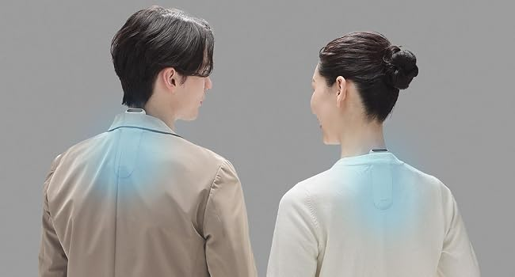

夏場の外回りや通勤で一番きついのは、首元にこもる熱だと感じている。ハンディファンでは風を当てられる範囲が限られるし、保冷剤は溶けたら終わりだ。以前から「着るクーラー」というジャンルには興味があったが、今回ソニーの最新モデルREON POCKET 6 (RNPK-6) を実際に使う機会があったので、2か月ほど試した感触をまとめておきたい。
REON POCKET 6とは
REON POCKET 6は、ソニーサーモテクノロジーが手がけるウェアラブルサーモデバイスの最新モデルだ。首の後ろに装着し、ペルチェ素子を使って冷却面・温熱面の温度を切り替えることで、体感温度をコントロールする仕組みになっている。本体サイズは約53mm×24mm×119mm、質量は約125g。ネックバンドに本体を通して首に掛けるスタイルで使う。
今回のモデルの一番の変更点は、新開発の「DUALサーモモジュール」だ。ペルチェ素子1つあたりの体積を小さくし、2つを交互に稼働させることで、少ない電力でも冷却面温度を従来モデル比で最大-2℃まで下げられるようになったという。ネックバンドは「アダプティブホールドデザイン」という新しい構造になり、装着時のフィット感も見直されている。
主要スペック
| 型番 | RNPK-6 |
|---|---|
| サイズ | 約53mm × 24mm × 119mm |
| 質量 | 約125g（本体のみ） |
| 冷却面素材 | ステンレススティール（SUS316L） |
| 通信方式 | Bluetooth 5.0 Low Energy（専用アプリ「REON POCKET」対応） |
| 充電端子 | USB Type-C |
| 充電時間 | 満充電まで約120分、80%まで約60分 |
| 連続稼働時間 | 冷却レベル1で約10時間、レベル5で約3時間（レベルにより変動） |
| 防水性能 | 防滴シーリング |
| 操作 | 本体の物理ボタンでオンオフ・モード・レベル調整が可能 |

冷却レベルは1〜5段階で調整でき、レベルを上げるほど冷却は強くなるが稼働時間は短くなる。バッテリー持ちと冷却の強さはトレードオフの関係なので、外出時間や暑さに合わせてレベルを選ぶ使い方になる。
使ってわかった、3つの本音
1. 冷却レベルを上げたときのひんやり感がはっきりわかる
最初にレベルを上げて試したとき、首の後ろにひんやりとした感覚がしっかり伝わってきて驚いた。デュアルサーモモジュールの効果なのか、以前試したことのある扇風機タイプのウェアラブル製品よりも「冷えている」という実感が強い。真夏の屋外移動や通勤電車を待つ時間など、汗ばむ前に首元を冷やしておきたい場面で特に効果を感じやすかった。
2. ネックバンドの装着感が思ったより邪魔にならない
着るクーラーというと重さや圧迫感が気になっていたが、アダプティブホールドデザインのネックバンドは首への収まりが良く、長時間装着していても違和感が少なかった。物理ボタンで冷却レベルを調整できるので、スマホを取り出さずに首元だけで操作が完結するのも扱いやすいと感じた。
3. 高レベルで使うと稼働時間はそれなりに短くなる
レベル1なら約10時間持つが、一番強いレベル5にすると約3時間程度まで下がる。真夏の炎天下ではつい強めのレベルを使いたくなるが、そのぶんバッテリーの減りも早い。丸一日の外出で使い切りたい場合は、こまめにレベルを調整するか、モバイルバッテリーを携帯しておくと安心だと思う。
- 新開発のDUALサーモモジュールで冷却面がしっかり冷える。
首元にひんやりとした感覚が明確に伝わり、暑さ対策としての実感を得やすい。 - ネックバンドのフィット感が良く、長時間の装着でも邪魔になりにくい。
アダプティブホールドデザインにより、首への収まりが自然だった。 - 物理ボタンでオンオフ・モード・レベル調整が完結する。
スマホを取り出さずに首元だけで操作できるのは外出先で扱いやすい。 - USB Type-Cで約120分の充電が可能。
他の手持ちの機器と充電ケーブルを共用できる。
正直に書く、気になる点
- 冷却レベルを上げるほど連続稼働時間が短くなる。
レベル5では約3時間程度が目安となるため、長時間の外出では充電計画を考えておきたい。 - 防水性能は防滴シーリングにとどまる。
完全防水ではないため、大量の汗や雨に直接さらす使い方は避けたほうがいい。 - 首元に機器を装着すること自体に慣れが必要な人もいる。
ネックバンド自体は軽量だが、初めて着るクーラーを使う場合は最初の数回で装着感を確認しておきたい。
学生なら、まずはPrime Studentをチェック。
Prime Student（旧Amazon Student）を見てみる※学生確認の上、登録は無料です。詳細条件はPrime Studentのページでご確認ください。
こんな人に向いている
夏場の通勤・通学や外回りの営業など、屋外で過ごす時間が長い人に向いている。ハンディファンでは物足りなかった人や、首元をピンポイントで冷やしたい人にも合うと思う。逆に、完全防水が必要な激しい運動シーンでの使用や、稼働時間の長さを最優先したい人は、使うレベルとバッテリー計画を事前にイメージしておいたほうがいい。
総評
REON POCKET 6は、DUALサーモモジュールによる冷却力の向上とネックバンドの装着感の見直しで、着るクーラーとしての完成度がさらに上がったモデルだと感じた。首元をしっかり冷やしたいというニーズに対して、実感のある冷たさで応えてくれる点が印象的だった。
25,300円前後という価格を考えると、猛暑の中で長時間屋外にいる機会が多い人にとっては、検討する価値のある一台だと思う。